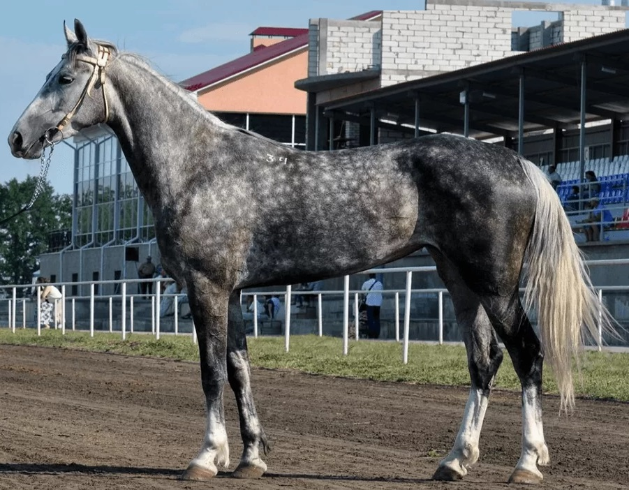
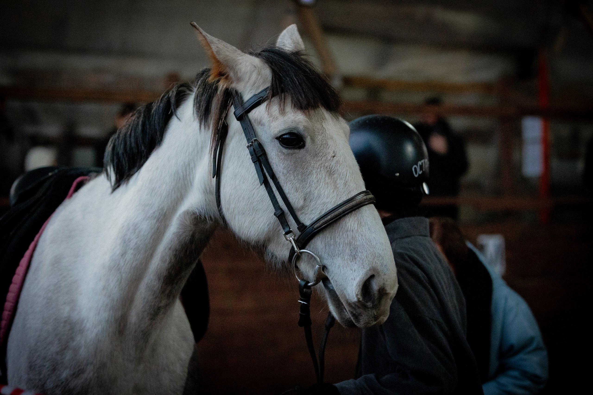
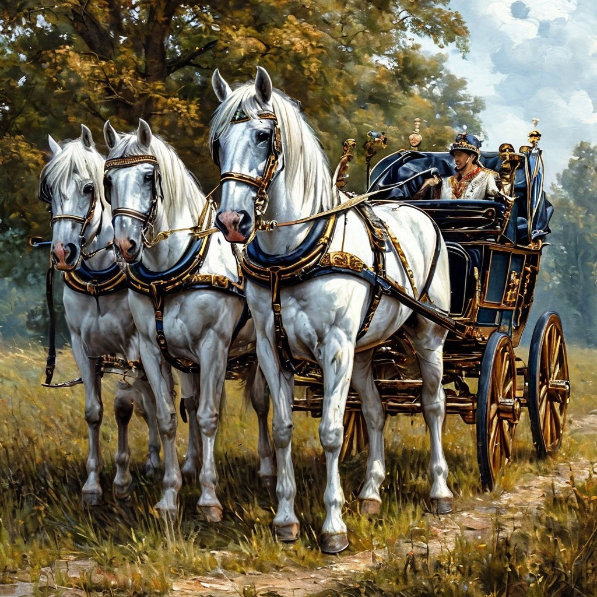
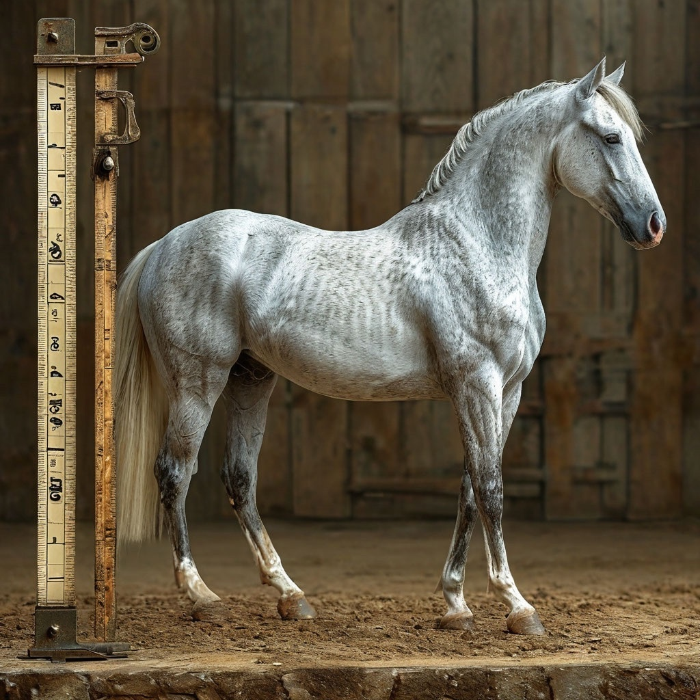
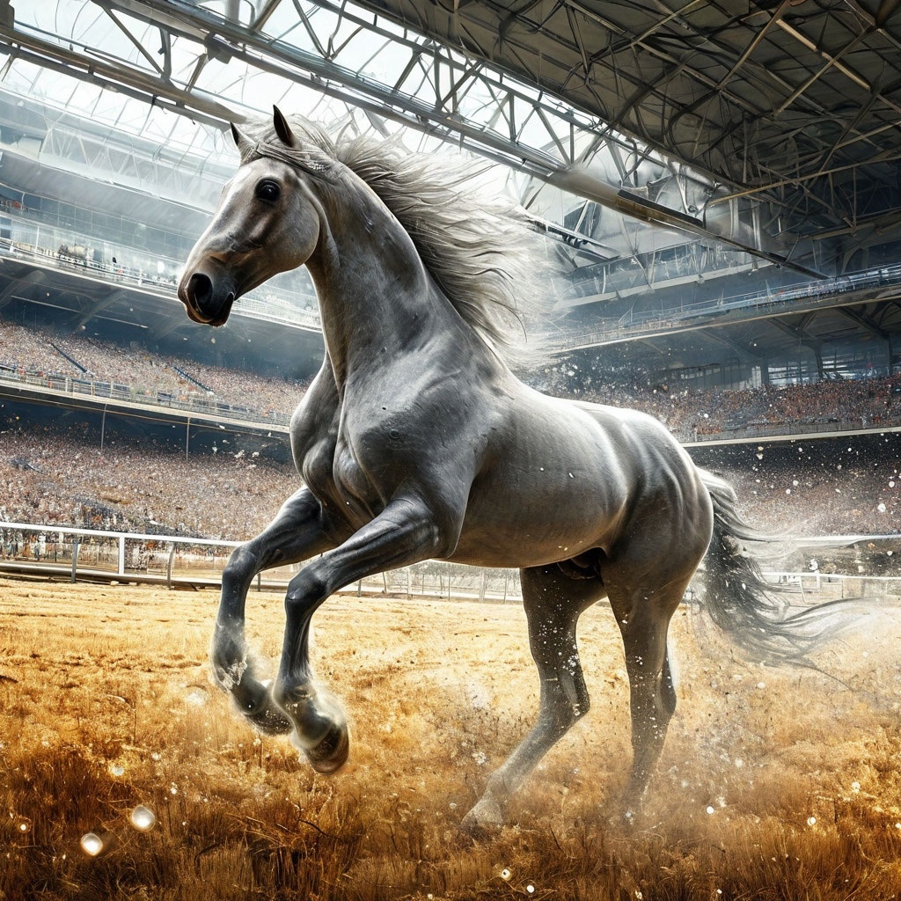
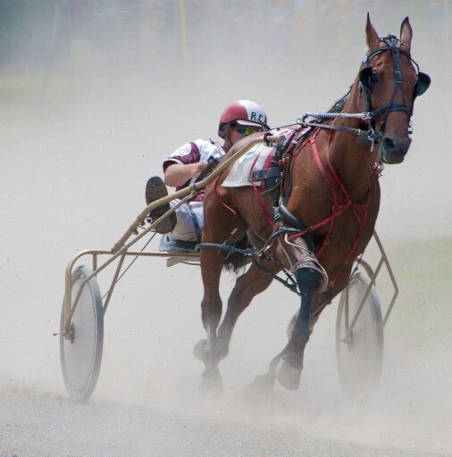

Ласточка
Орловская рысистая
История породы
Орловская рысистая порода (орловский рысак) – старейшая и ценнейшая культурная порода лошадей, выведенная в России. Названа так по имени создателя графа Орлова-Чесменского: талантливого полководца и соратника Екатерины II, а после отставки ещё и конезаводчика. История орловских рысаков началась в 1776 году, когда граф Алексей Орлов ввез в Россию арабского жеребца Сметанку. Он был приобретён за огромную сумму – 60 тысяч серебром у турецкого султана после победы, одержанной в войне с Турцией.
Наша Ласточка
Ласточка рождена в 2013 году, является помесью Орловской рысистой и чистокровной верховой. Масть – серая. Очень резвая лошадка с добрым характером!
Особенности породы
Орлов собирался вывести крупную, эффектную, но в то же время выносливую, универсальную породу – под седло, и в упряжь, и в плуг. Что называется: и в подводу, и под воеводу. Такими уникальными качествами и по сей день обладает только орловская рысистая. Главным требованиям к этим лошадям была резвая, четкая рысь, поскольку бегущая рысью лошадь долго не устает и мало трясет экипаж.
Самой важной чертой орловских рысаков является генетически закреплённая способность к резвой рыси. Эта особенность унаследована от родоначальника породы — арабского жеребца Сметанки, у которого была дополнительная пара рёбер, что удлиняло корпус и давало способность к правильной рыси. Это одна из самых крупных среди упряжных пород в мире. Кони эти, помимо всего прочего, еще и очень выносливые.
Описание породы
Современный орловский рысак – крупная гармонично сложенная лошадь крепкой и сухой конституции, обладающая выраженным упряжным форматом и нарядным экстерьером.
Рост в холке – 157-170 см. Рост кобыл, в среднем, 161 см, жеребцов – 162 см. Голова сухая, небольшого размера, широкая во лбу. Шея – высокая, с изгибом. Широкий и массивный круп, прямая, длинная, мускулистая спина, прочный костяк.
Масть орловская лошадь обычно имеет серую. Это может быть светло-серый окрас, красно-серый, темно-серый, серый в яблоках и т. д. Но иногда рождаются жеребята и другой масти — вороной, буланой, чалой и пр. Недостатком это не считается. Отличные от серой масти достались этим коням в основном в наследство от первых кобыл-прародительниц.
Существует 3 типа экстерьера орловских лошадей: сухой (легкий), промежуточный и массивный (напоминающий тяжеловоза).
Характер
Одним из безусловных преимуществ орловского рысака является спокойный, покладистый характер. Эти кони прослыли преданными и смелыми товарищами своих хозяев. Но, несмотря на спокойный характер, лошади орловской породы считаются очень энергичными. Лениться, как представители некоторых других пород, привычки они совершенно не имеют. Спокойствие этих коней хорошо известно многим заводчикам. Однако иногда эти кони все же способны проявлять некоторую строптивость. Но случается это не особенно часто.
Характерный рацион питания породы

что-то будет написано
что-то будет написано
Тренинг для данной породы

что-то будет написано
Дисциплины конного спорта
Основная сфера использования – ипподромные испытания (бега). Помимо этого, орловцы широко используются в массовом конном спорте, троечной езде, драйвинге, как досуговая и рабочая лошадь. Орловская рысистая – абсолютно универсальная порода, так как именно это свойство было одним из ключевых при ее создании. Уже тогда лошади могли резво бежать длинные дистанции, что делало их абсолютно незаменимыми при передвижении по бескрайним российским просторам. Особо любили орловских рысаков извозчики, ценившие их за красоту и стать и за возможность прокатить седока «с ветерком»
Знаменитые представители породы
что-то будет написано
Племенные хозяйства и паспорт
что-то будет написано